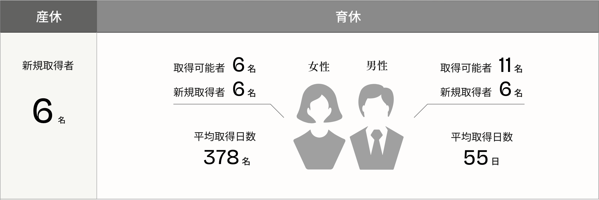

welfare
働く人々を支える制度
松竹では、社員一人ひとりが安心して働き、持てる力を存分に発揮できる環境づくりを大切にしています。
充実した福利厚生制度を通じて、働く人々の成長と生活を幅広くサポートし、社員とともにより良い未来をつくり続けています。
system
制度
休日・休暇に関する制度
有給休暇 平均取得日数
12.7
日
休日
土、日、祝日、年末年始、創立記念日、メーデー
※現業部門（劇場・映画館ほか）はシフト制のため月により休日日数は異なります
休暇
年次有給休暇（初年度10日）、夏季休暇（5日）、忌引休暇、リフレッシュ休暇、結婚休暇、特別保存休暇、永年勤続休暇 等
柔軟な働き方に関する制度
フレックスタイム制
標準労働時間：7時間30分
※現業部門（劇場・映画館ほか）は、実働7時間
テレワーク勤務・時短勤務あり
※部署の働き方に合わせてご活用いただけます
出産・育児に関する制度
出産休暇、育児休業、出産祝い金、育児時短（小学6年終業まで）、子の看護休暇、病児保育・ベビーシッター補助 等

介護に関する制度
介護休業（通算1年）、介護支援サービス補助 等
暮らし・学びに関する制度
借り上げ社宅
※転勤者や実家から通勤1時間以上の新卒採用者に限る
研修制度
内定者・新入社員研修、階層別研修、テーマ別研修、オンライン研修サービス、社外派遣研修、自己啓発支援 等
クラブ活動
野球、サッカー、将棋 等
各種制度・そのほか
社会保険
厚生年金、健康保険、雇用保険、介護保険、労災保険
財産形成関連
従業員持株制度、財形貯蓄制度、選択制確定拠出年金制度、職場つみたてNISA
その他福利厚生
福利厚生倶楽部、食事券補助、映画演劇鑑賞補助、慶弔金、ＧＬＴＤ制度、三大疾病サポート保険 等
関連ページ
voice
利用者の声
自己啓発支援を
活用して英会話を
勉強しています
業務で日々英語を使用する部署に配属になり、会話スキルを向上させるために英会話を習い始めました。費用の7割を会社が負担してくれる自己啓発支援（上限5万円／年間）を使っています。資格取得や研修受講など、自分が学びたい内容で申請できるため、毎年目標を定めてスキルアップに活用しています。
映画演劇鑑賞補助の
おかげで気兼ねなく
エンタメに触れられる！
入社してから、プライベートでも映画・演劇の鑑賞機会が増えました。業務にも活かせますし、勉強も兼ねて気になった作品はできるだけ観に行くようにしています。松竹の映画演劇鑑賞補助制度では、プライベートで観た作品のチケット代を年間上限6,000円まで支給してもらえるので、必ず毎年申請しています。
制度を活用しながら、
仕事と育児の両立に
奮闘中
出産と育休を経て、今は時短で勤務しています。フレックス制度があることで子供のスケジュールに合わせて動きやすいですし、テレワーク勤務も取り入れることで、仕事にもやりがいを持って働けています。社内を見渡すと、男性の育休取得も当たり前になってきたことを感じます。育児との両立はもちろん大変なこともありますが、子育てを通して自分の視野も広がりましたし、この経験を仕事にも還元したいと思っています。